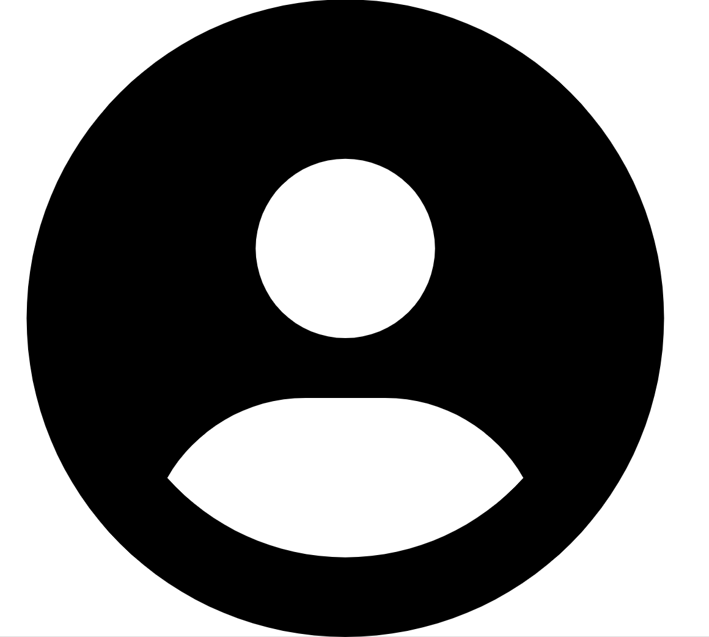

一個乾淨、可擴充的登入網站骨架
已串接 Cookie + JWT。你可以把它當作未來所有小專案的起手式。
Auth
使用 /api/me 檢查登入狀態
Pages
Dashboard / Profile / Settings
Logout
一鍵登出清 cookie
提示：如果你用 Live Server（5500）開前端，Flask 用 5000 跑後端就能直接通。

MyApp已串接 Cookie + JWT。你可以把它當作未來所有小專案的起手式。
使用 /api/me 檢查登入狀態
Dashboard / Profile / Settings
一鍵登出清 cookie
提示：如果你用 Live Server（5500）開前端，Flask 用 5000 跑後端就能直接通。